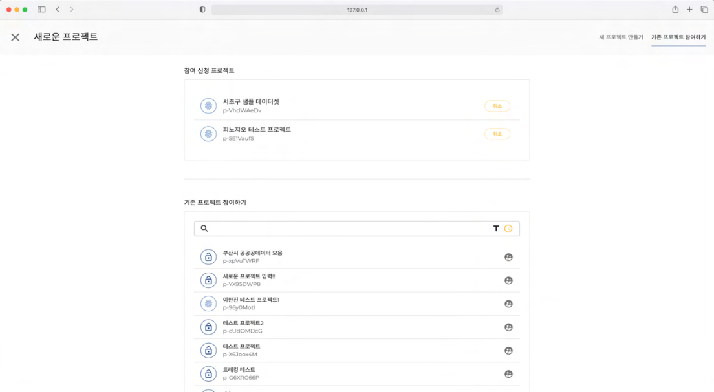
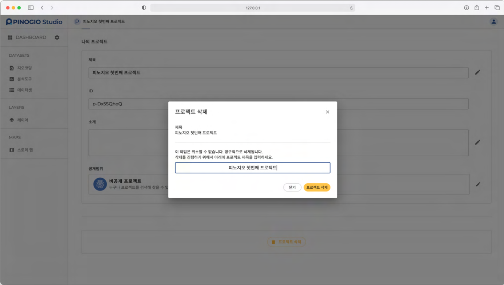
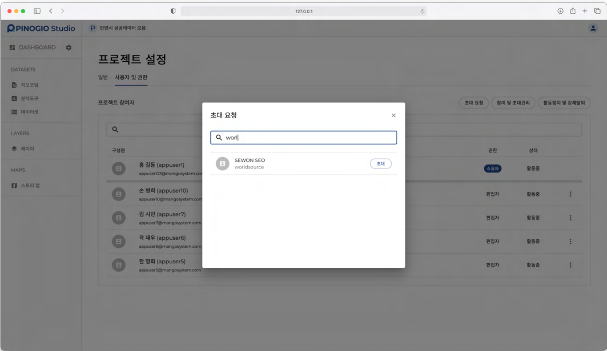
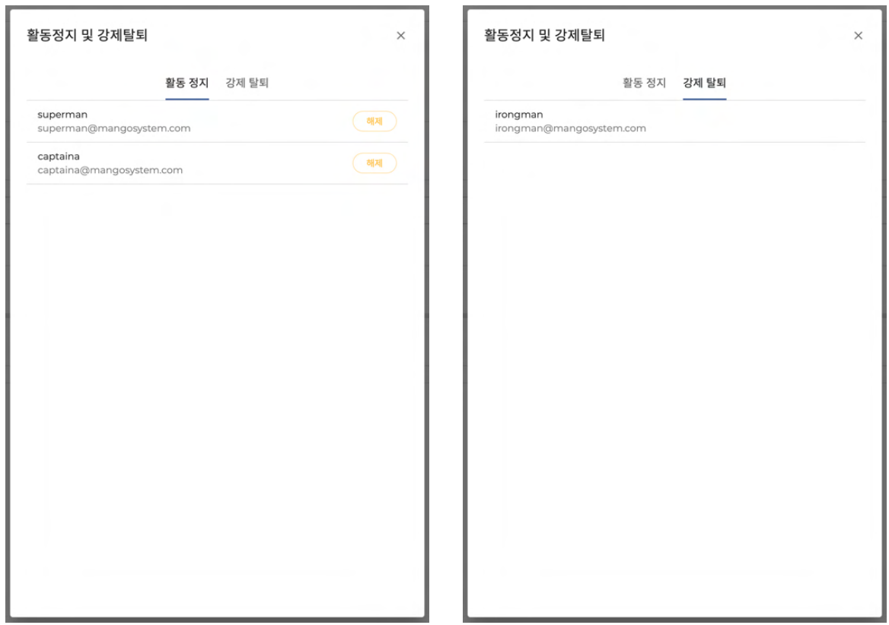

프로젝트
프로젝트는 사용자의 작업 목적에 따라 다양하게 만들어지는 작업공간입니다.
우리는 컴퓨터를 사용할 때 문서, 이미지, 동영상, 음악 파일의 관리를 위해 다양한 폴더를 만들어 그 곳에 파일을 구분하여 저장합니다. 폴더는 현실 세계에서 서류함과 같은 기능을 하는 것으로 파일을 효율적으로 묶어주는 역할을 합니다.
피노지오에서 이런 폴더 또는 서류함과 같은 기능을 하는 것이 프로젝트입니다. 특정한 주제에 맞게 프로젝트를 만들고 데이터셋, 레이어, 스토리 맵을 만들어 커뮤니티 기능으로 프로젝트 참여자와 협업을 할 수 있습니다.
프로젝트의 이해
프로젝트 제목
프로젝트 제목은 프로젝트를 선택하거나 기존 프로젝트에 참여할 때 구분하는 용도로 사용됩니다. 단순히 구분하는 용도로 사용되어 다른 프로젝트와 제목은 중복될 수 있습니다. 프로젝트 제목은 언제든지 설정을 통해 변경할 수 있습니다.
프로젝트 ID
프로젝트의 고유 식별자로 제목과 다르게 중복되는 ID는 존재하지 않습니다. 한 번 할당된 ID는 변경할수 없습니다.
프로젝트 공개범위
프로젝트의 공개 범위에 따라 모두 공개하거나, 사용자의 접근을 제한적으로 조절하여 개인적인 공간을 만들 수도 있습니다. 아래는 공개범위의 종류와 특징을 설명합니다.
공개범위 |
특징 |
|---|---|
공개 프로젝트(PUBLIC) |
누구나 프로젝트를 검색할 수 있습니다.
게시물을 볼 수 있습니다.
멤버 신청시 자동으로 승인 됩니다.
|
비공개 프로젝트(Private) |
누구나 프로젝트를 검색할 수 있습니다.
게시물은 프로젝트 멤버만 볼 수 있습니다.
멤버 신청시 프로젝트 소유자의 승인이 필요합니다.
|
비밀 프로젝트(Secret) |
프로젝트가 검색되지 않습니다.
게시물도 프로젝트 멤버만 볼 수 있습니다.
|
프로젝트 공개범위 프로젝트는 내가 만든 프로젝트에 다른 사용자가 참여할 수 있고, 다른 사용자가 만든 프로젝트에 내가 참여할 수 있습니다. 사용자의 권한에 따라 프로젝트 내에서 할 수 있는 기능이 제한됩니다. 아래는 사용자 권한의 종류와 특징을 설명합니다.
사용자 권한 |
특징 |
|---|---|
소유자 |
프로젝트를 만든 사용자
프로젝트 설정 기능에 유일하게 접근할 수 있음
프로젝트 모든 기능 사용 가능
|
편집자 |
프로젝트 참여자
프로젝트 설정 기능에 접근할 수 없음
주요 기능 사용 가능하지만 내가 만든게 아니면 삭제할 수 없음
프로젝트 탈퇴, 활동 정지, 강제탈퇴 했을 경우 편집자가 만든 게시물은 삭제되지 않고 유지됨
|
프로젝트 검색 및 선택하기
프로젝트는 내가 소유자로 있는 나의 프로젝트와 참여 신청, 초대를 통해 다른 사용자가 소유자로 있는 프로젝트에 참여하게 되는 참여 프로젝트로 구분됩니다.
나의 프로젝트
나의 프로젝트는 내가 소유자로 있는 프로젝트입니다. 목록에 표시된 프로젝트 중 하나를 클릭하면 프로젝트 페이지로 이동할 수 있습니다.

참여 프로젝트
참여 프로젝트는 내가 편집자로 참여하고 있는 프로젝트입니다. 참여 프로젝트 탭을 클릭하여 확인할 수 있습니다. 오른쪽 프로젝트 활동 목록에서는 프로젝트 참여, 가입, 초대 관련 활동을 확인할 수 있습니다.

프로젝트 활동 물음표아이콘 에 마우스를 올리면 활동 목록의 키워드 종류와 내용을 확인할 수 있습니다. 리프레시아이콘 을 클릭하면 활동내용이 갱신되고, 목록의 엑스아이콘 을 클릭하면 활동 내용이 삭제됩니다.
참여 프로젝트 탈퇴는 떠나기아이콘 을 클릭하여 팝업창에서 프로젝트 제목을 다시 한 번 확인하고 체크 후 프로젝트 떠나기 버튼을 클릭하면 프로젝트에서 탈퇴할 수 있습니다.
프로젝트 만들기
내가 소유자가 되는 프로젝트를 새롭게 만들거나 다른 사용자의 프로젝트에 참여할 수 있는 기능에 대해서 소개합니다.
새 프로젝트 만들기

다음 단계에 따라 새로운 프로젝트를 만들 수 있습니다.
제목 입력란에 프로젝트 제목을 입력합니다. (영문, 한글, 숫자, 특수문자 [_ ! ? . , - ], 공백 포함 1자리 이상 30자리 이하)
소개 입력란에 간단한 소개글을 200자 내로 입력합니다.
공개 범위 를 클릭하여 공개 프로젝트, 비공개 프로젝트, 비밀 프로젝트 중에 하나를 선택합니다. (기본 설정된 공개 범위는 공개 프로젝트입니다.)
새 프로젝트 만들기 를 클릭합니다.
완료되면 프로젝트 페이지로 이동 합니다.
기존 프로젝트 참여하기 : 초대받은 프로젝트

다른 프로젝트의 소유자가 프로젝트에 참여할 것을 요청하는 초청을 보냈을 때 확인할 수 있는 목록입니다. 프로젝트 초대 대기 상태로, 초청을 보낸 다른 프로젝트 소유자가 취소할 경우 목록에서 제외됩니다. 여기서 사용자는 다음과 같은 선택을 할 수 있습니다.
승인 을 클릭하면 프로젝트에 참여합니다. 거부 를 클릭하면 프로젝트에 참여하지 않습니다. 만약에 거부를 할 경우 같은 프로젝트에 다시 초대 요청을 받을 수 있습니다.
기존 프로젝트 참여하기 : 참여 신청하기
공개된 프로젝트를 검색하고 선택하여 참여 신청하는 방법은 아래와 같습니다.
기존 프로젝트 참여하기 목록에서 참여하고자 하는 프로젝트를 조회합니다.
검색바를 이용하여 제목으로 프로젝트를 필터링할 수 있습니다.
최근에 만들어진 프로젝트 목록이 내림차순으로 기본 정렬되어 있습니다.
T아이콘 을 클릭하면 이름순으로 내림차순 정렬됩니다.
두사람모양아이콘 을 클릭합니다.
기존 프로젝트에 참여를 확인하는 팝업창이 표시됩니다.
신청을 클릭하면 프로젝트에 참여합니다.
공개 프로젝트는 신청 즉시 참여가 완료됩니다.
비공개 프로젝트는 프로젝트 소유자의 승인이 있어야 참여가 완료됩니다.
비공개 프로젝트의 신청 대기 상태는 참여 신청 프로젝트 목록에서 확인할 수 있습니다.
대기 중인 신청 프로젝트는 취소를 클릭하여 참여를 취소할 수 있습니다.
프로젝트 대시보드
프로젝트의 메인 페이지인 대시보드는 데이터셋/레이어/스토리 맵의 개수 최근 등록된 게시물, 활성화된 분석도구 개수, 프로젝트 구성원 수를 한 눈에 확인할 수 있습니다.
하단의 지도를 통해 프로젝트 내 데이터셋의 위치 중심점을 확인할 수 있습니다.
왼쪽 상단의 피노지오 스튜디오 로고를 클릭하면 프로젝트 목록 페이지로 이동합니다.
로고 오른편에 프로젝트 제목이 표시됩니다.
왼쪽에 위치한 메뉴를 클릭하면 해당 화면으로 전환되어 기능을 수행할 수 있습니다.
왼쪽 메뉴의 DASHBOARD 옆 설정아이콘을 클릭하면 프로젝트 설정 페이지로 이동합니다. 이 메뉴는 프로젝트 소유자에게만 표시되고, 소유자만 페이지에 접근할 수 있습니다.
프로젝트 일반 설정
프로젝트 설정의 일반 탭에서는 프로젝트의 제목, 소개, 공개 범위를 변경하거나 프로젝트를 삭제할 수 있습니다.
제목
프로젝트의 제목을 변경할 수 있는 기능입니다. 다음과 같은 과정으로 진행합니다.
제목오른쪽의 연필모양아이콘을 클릭합니다.
제목을 변경할 수 있는 팝업창이 표시됩니다.
제목 입력란에 변경할 값을 입력합니다.(같은 내용이거나 올바르지 않은 값이 입력되면 저장 버튼이 활성화 되지 않습니다.)
저장을 클릭하면 제목 변경이 완료됩니다.
닫기을 클릭하면 제목 변경이 취소합니다.
ID
프로젝트 고유의 값으로 는 ID 변경할 수 없습니다.
소개
프로젝트의 소개를 변경할 수 있는 기능입니다. 다음과 같은 과정으로 진행합니다.
소개 오른쪽의 연필모양아이콘을 클릭합니다.
소개를 변경할 수 있는 팝업창이 표시됩니다.
소개 입력란에 변경할 값을 입력합니다. 입력 값이 없어도 괜찮습니다.(같은 내용이거나 올바르지 않은 값이 입력되면 저장 버튼이 활성화 되지 않습니다.)
저장을 클릭하면 소개 변경이 완료됩니다.
닫기을 클릭하면 소개 변경이 취소합니다.
공개범위
프로젝트의 공개범위를 변경할 수 있는 기능입니다. 다음과 같은 과정으로 진행합니다.
공개범위 오른쪽의 연필모양아이콘 을 클릭합니다.
공개범위를 변경할 수 있는 팝업창이 표시됩니다.
공개범위 선택란에서 변경할 값을 클릭합니다.
저장을 클릭하면 공개범위 변경이 완료됩니다.
닫기를 클릭하면 공개범위 변경이 취소됩니다.
프로젝트 삭제
프로젝트를 삭제하는 기능으로 프로젝트 내 데이터셋, 레이어, 스토리 맵이 없을 때 삭제가 진행됩니다. 삭제는 신중해야 하기 때문에 프로젝트 제목을 입력하고 삭제를 진행합니다. 다음은 프로젝트 삭제 방법에 대해 설명합니다.
프로젝트 설정 페이지 하단부에 프로젝트 삭제 를 클릭합니다.
팝업창에서 현재 프로젝트의 제목을 입력란에 직접 입력하여 확인합니다.
프로젝트 삭제 를 클릭합니다.
프로젝트내 게시물이 비어있지 않으면 프로젝트 삭제는 진행되지 않습니다.
프로젝트 사용자 및 권한 관리
프로젝트 설정 사용자 및 권한 탭에서는 참여자의 목록과 상태 변경, 초대요청/관리 등의 기능을 수행할 수 있습니다.
프로젝트 참여자 목록
프로젝트 참여자의 이름과 아이디, 이메일을 조회하고 검색할 수 있는 페이지로, 프로젝트 소유자는 활동 정지, 강제 탈퇴로 사용자의 권한을 변경할 수 있습니다.
프로젝트 참여자의 오른쪽점아이콘 을 클릭하면 나오는 메뉴는 아래와 같습니다.
프로필 : 구성원 프로필 정보 확인 가능합니다.
활동 정지 : 프로젝트에 접근할 수 없습니다.
강제 탈퇴 : 프로젝트에 접근할 수 없습니다.
활동 정지와 강제 탈퇴된 사용자는 프로젝트에 접근할 수 없고 나의 참여 프로젝트 목록에서도 확인할 수 없습니다. 두 기능 모두 유사하지만 관리측면에서 불량 사용자를 구별해서 관리하는 목적을 가지고 있습니다.
초대요청
프로젝트에 참여를 요청하는 사용자를 검색하여 초대를 할 수 있습니다.
검색창에서 아이디를 검색합니다.
검색된 사용자 오른쪽 초대를 클릭합니다.
참여 및 초대관리
참여 신청 탭은 프로젝트에 참여를 신청한 사용자 목록입니다. 프로젝트 공개범위가 비공개 프로젝트일 때 목록에 참여자를 확인할 수 있습니다. 공개 프로젝트는 참여 자동 승인이 되고, 비밀 프로젝트는 참여 신청을 할 수 없어 목록에 아무 내용이 없습니다.
프로필을 클릭하면 사용자 프로필 정보를 확인할 수 있는 팝업이 표시됩니다.
승인을 클릭하면 참여 요청자를 구성원으로 포함합니다.
거부를 클릭하면 참여 요청자를 구성원으로 포함시키지 않습니다. 목록에서 제거 됩니다.
초대 요청 탭에서는 프로젝트 소유자가 초대 요청을 보낸 사용자 목록을 확인할 수 있습니다.
취소를 클릭하면 초대 요청을 취소합니다.
활동정지 및 강제탈퇴
활동 정지와 강제 탈퇴 사용자의 목록을 확인하고 관리하는 기능입니다. 활동 정지된 사용자와, 강제 탈퇴자의 경우 프로젝트에 접근할 수 없습니다. 프로젝트 내 활동과 접근을 차단하기 위한 권한을 설정하는 것으로 관리 목적의 활동 정지, 강제 탈퇴 단계로 구별됩니다. 특히 프로젝트 사용자의 강제탈퇴는 활동 정지와 다르게 해제할 수 있는 기능이 없어 사용에 주의를 해야 합니다.
활동 정지 . 탭에서는 활동 정지 사용자 목록을 확인할 수 있습니다.
해제를 클릭하면 다시 활동 가능한 상태로 변경됩니다.
강제 탈퇴 탭에서는 강제 탈퇴 사용자 목록을 확인할 수 있습니다. 강제 탈퇴는 해제할 수 없습니다.
경고
여기서부터는 현재 작성중입니다.